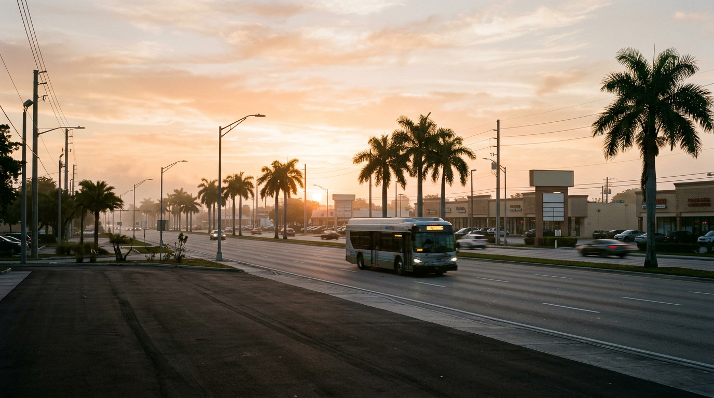
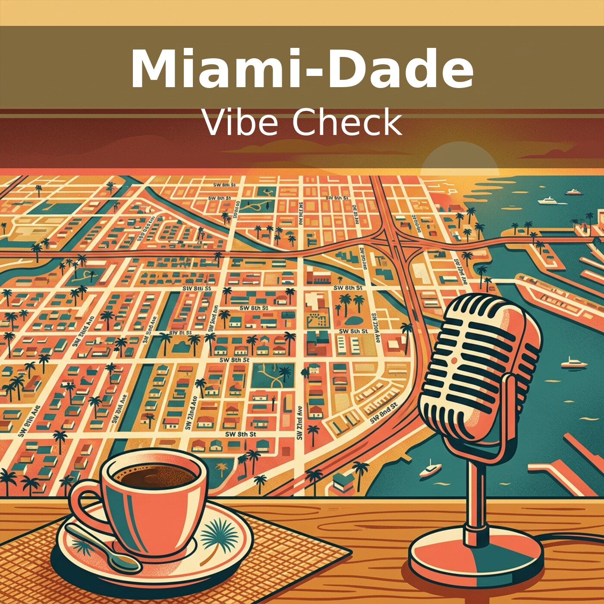

01
Apple Podcasts
Follow a Show by URL
Open the Library tab, tap the ••• menu at top right, choose “Follow a Show by URL”, and paste the feed URL.

Weekday local-news podcast
A 6–9 minute morning rundown of west-central Miami-Dade and County Hall, balanced across left, center and right outlets in English and Spanish.
West Miami-Dade at sunrise
About the show
New episode every weekday at 8 am Eastern. Mondays cover the whole weekend.
Stories directly about Miami-Dade come first. State and federal news that affects the county closes each episode in “Beyond Dade, affecting Dade.”
Every story shows its coverage split by outlet lean.
Ground News style: left, center and right, with blindspots flagged.
Axios Miami, WLRN, Miami Herald, el Nuevo Herald, Sun Sentinel, Local 10, NBC 6, CBS News Miami, 7News, Telemundo 51, Univision 23, America TeVe, Political Cortadito, Florida Politics, Florida Bulldog, Community News, Miami New Times, Diario Las Americas, Sayfie Review, and more.
How to subscribe

01
Apple Podcasts
Open the Library tab, tap the ••• menu at top right, choose “Follow a Show by URL”, and paste the feed URL.
02
Overcast, Pocket Casts, Castro and most others
Find Add podcast or “Add URL”, then paste the feed URL.
03
Spotify
Spotify does not accept private RSS feeds. Use another app.
Episodes
Oct 12, 2026 7:26
A pocketbook Monday: the county raises bus and Metrorail fares 50 cents while Metromover stays free, the Sheriff disputes a record budget, and Angie Nixon campaigns in Sweetwater. Plus disabled-parking permit cancellations, school vouchers, the weekend after Hurricane Isaias, and what Amendment 3 would cost the county.
Oct 11, 2026 0:36
A short test episode.
The full, always-current episode list lives in the podcast feed.